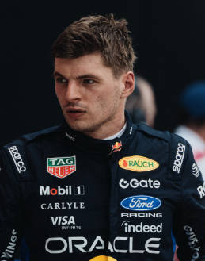

Max Verstappen
Max Verstappen
Team: Red Bull Racing
Team Principal: Laurent Mekies
Number: 3
Nationality: Netherlands
Debut: 2015
Born: 30 September 1997
History: Dutch driver Max Verstappen has established himself as one of the most dominant figures in modern Formula 1. After becoming the youngest race winner in F1 history with Red Bull Racing, Verstappen went on to build a championship-winning era defined by relentless consistency, aggressive racecraft, and exceptional adaptability in all conditions. Widely regarded for his ability to combine raw speed with tire management and strategic intelligence, he became the benchmark of the ground-effect era. Even as competition intensified heading into 2026, Verstappen remained one of the sport’s defining talents and a constant contender for both race victories and world championships.
